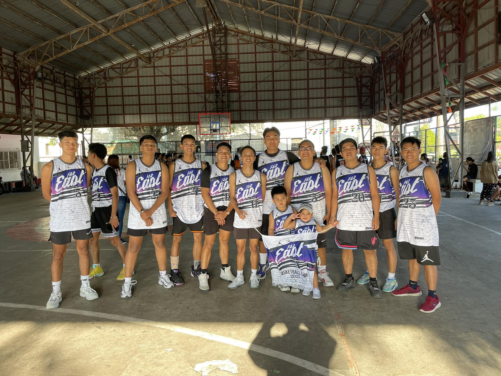
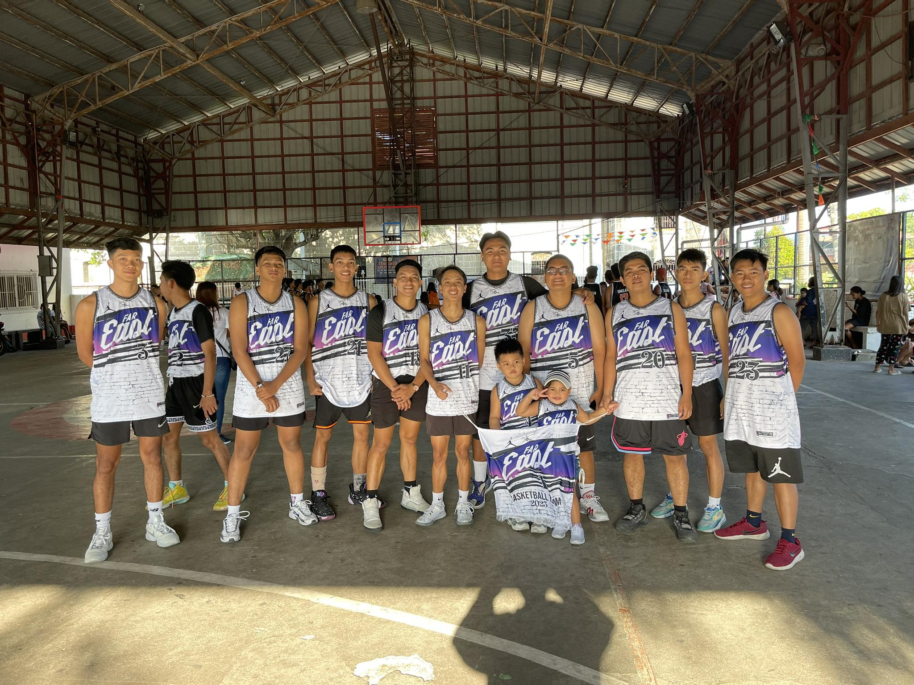

Far East Achievement
In 2017, I had the incredible opportunity to participate in a highly competitive basketball league in General Trias. After a series of intense matches and displaying exceptional teamwork and skills, our team performed exceptionally well, securing the esteemed position of 1st runner up in the league. The achievement filled us with immense pride and fueled our determination to excel even further in the future.
Over the years, I also had the privilege of representing my barangay, Poblacion 2, in the inter-color games. Competing against other talented teams from the barangay, I experienced both the thrill of victory and the lessons learned from facing challenges. In 2018, we made it to the semi-finals, narrowly missing the opportunity to claim the championship. However, this year, in 2023, our hard work and perseverance paid off as we once again reached the semi-finals, showcasing our consistent dedication to the sport.
Beyond sports, I also actively participated in church-related events and competitions. Our church formed a team to participate in an Unity Games , where we faced tough opponents such as Bucal, Maragondon, Sapang, and Malainen. Through unwavering determination and faith in each other, we emerged victorious, securing the championship trophy for our church community. The win was not only a testament to our athletic abilities but also a celebration of the camaraderie and spirit of unity within our church.
Our victory in the Unity Games also meant that we had the privilege of representing our church cluster in the district finals. The competition was fierce as we went up against other skilled church clusters from the district. However, our team's passion, skill, and determination were unwavering. We managed to advance to the semi-finals by defeating Cluster 7, earning the respect and admiration of our brethren
The journey to success in both sports and church competitions has been one filled with growth, teamwork, and memorable experiences. These achievements have not only shaped my abilities as an Basketball player but also instilled in me the value of dedication, persistence, and faith. As I look back on these accomplishments, I feel immensely grateful for the opportunities and support that have enabled me to reach these milestones. I am eager to continue my journey, striving for excellence in all aspects of life and inspiring others to do the same.


 
